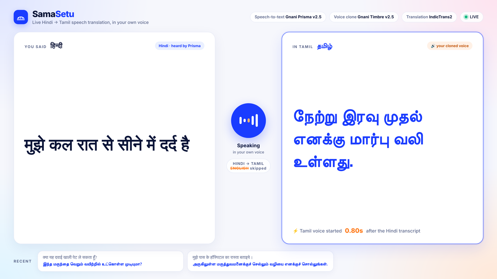

Live Hindi → Tamil speech translation, in the speaker's own voice
Great Indian AI Internship Challenge 2026 Nitin Singh · solo entry
B.Tech CSE, KIIT University, Bhubaneswar
github.com/singhhnitin/samasetu
I don't know a word of Tamil, yet SamaSetu lets me speak it in my own voice, about 1.5 seconds after I finish a Hindi sentence, with no English in between.

Live screen: Hindi heard by Gnani Prisma (left), Tamil spoken in the cloned voice by Gnani Timbre (right), delay measured per sentence. Sentences from a real test run.
THE PROBLEM
Millions of Hindi speakers live, work and get treated in Tamil Nadu. At a pharmacy or hospital counter, language becomes a wall.
Most tools route through English. Hindi and Tamil are both SOV, English is SVO, so the sentence is reordered twice, and the voice sounds like a machine.
THE SOLUTION
Direct Hindi → Tamil: no English pivot, one word order throughout.
Your own voice: cloned from a 20-second Hindi sample, speaking Tamil.
Live: ~1.5 s to first sound, on a laptop CPU.
Two-way mode for real conversations.
HOW IT WORKS
01 · HEAR
Gnani Prisma v2.5
Realtime streaming speech-to-text over WebSocket
~110 ms
→
02 · TRANSLATE
IndicTrans2 320M
Direct Hindi → Tamil, local CPU, greedy decoding
~395 ms
→
03 · SPEAK
Gnani Timbre v2.5
Cloned-voice TTS, streamed over SSE, plays from the first chunk
~407 ms
=
~1.5 sspeech to first translated sound
MEASURED, NOT ASSUMED
STAGE
SLOWER OPTION
CHOSEN
Speech-to-text
680 ms (upload)
110 ms (stream)
Translation
1,211 ms (5 beams)
395 ms (greedy)
Voice output
2,712 ms (full file)
407 ms (stream)
WHO IT'S FOR
Patients & health workersMigrant workersShopkeepersSupport agents